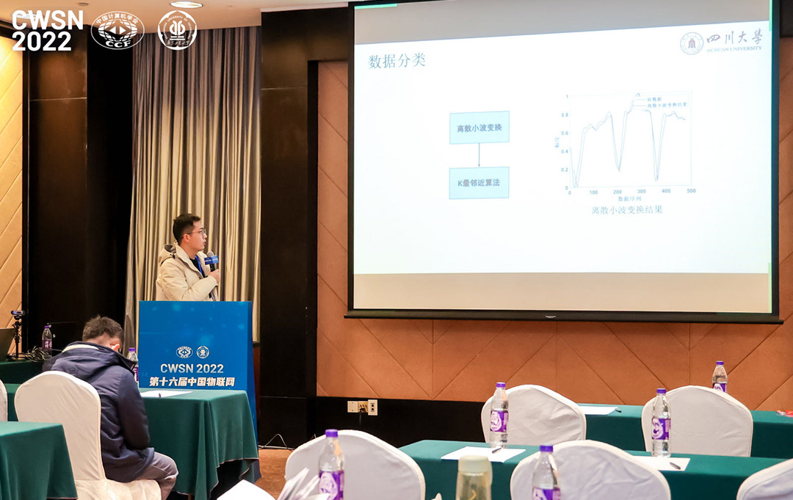
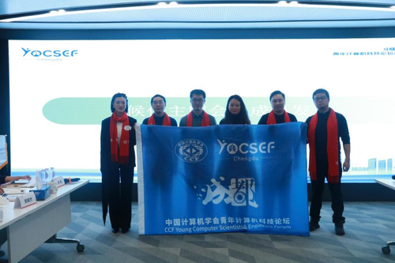
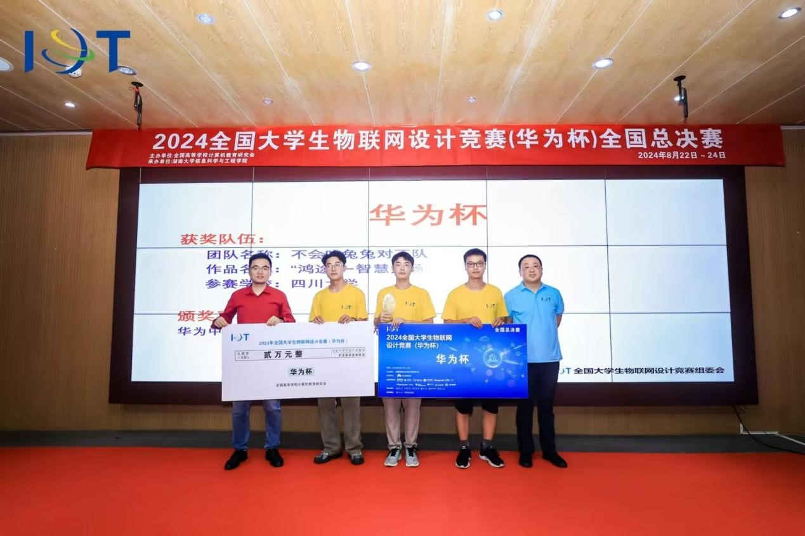
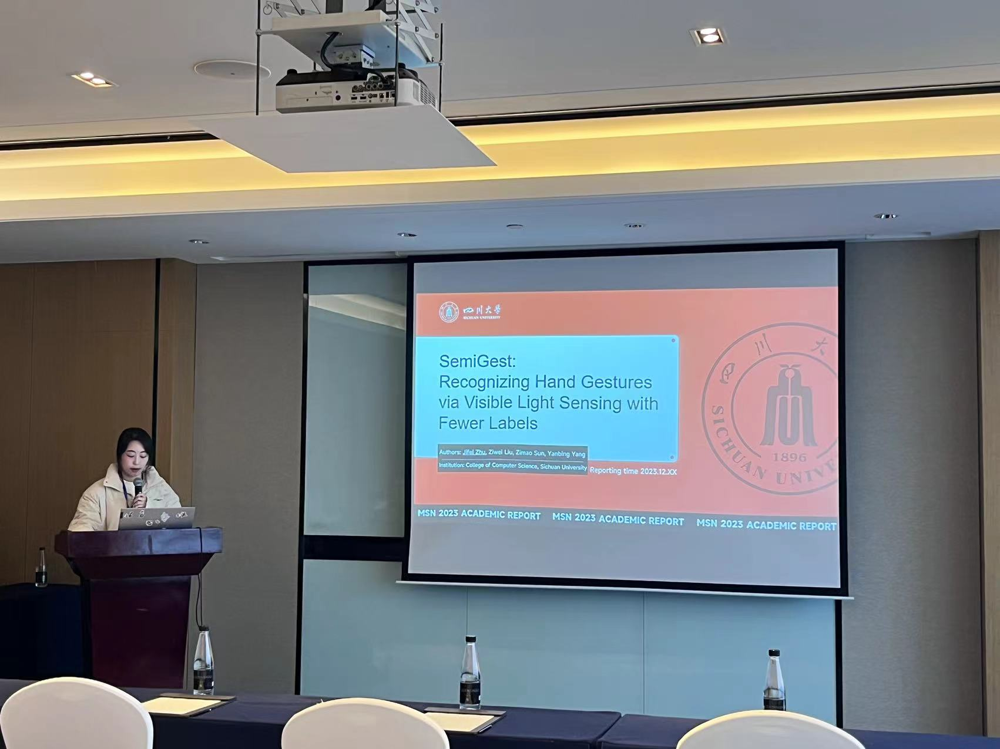

Get everything you need :)
2025年1月4日下午，CCF YOCSEF成都第二十一届学术委员会第二次会议暨2025-2026年度换届选举大会在四川明炬律师事务所明炬大讲堂举行。CCF YOCSEF总部候任主席贺瑞君、候任副主席鄢兴雨、金一以及AC委员张莹、赵恺，YOCSEF西安宋霄罡、陈亚兴，YOCSEF哈尔滨张春龙，YOCSEF青岛晁国清，YOCSEF长沙纪军刚，YOCSEF重庆何奕颖、黄浩、冯玉明，YOCSEF厦门王宁、杨烈君、余霄，YOCSEF广州刘同来，YOCSEF苏州张露瑶、史国良、张绍群、陈思源，YOCSEF济南李太忠，YOCSEF郑州杨子，YOCSEF成都往届主席彭博（21-22届）、杨新（22-23届）、牛宪华（23-24届）以及YOCSEF成都现任AC委员等60余人参加了此次会议。会议进行了文化交流、中期工作总结、AC互评、AC评优与续任以及2025-2026年度AC选举和学术委员会主席会议成员换届选举。
在候任副主席及候任学术秘书的整个竞选过程中，竞选者们纷纷阐述自身的优势和工作思路，并面对现场多轮提问作了精彩的回答。经现任AC委员无记名投票后，陈晓亮（西华大学）、杨彦兵（四川大学）、唐诗（真术相成）当选CCF YOCSEF成都学术委员会2025-2026年度候任副主席，陈曦（西南民族大学）、张婧（四川明炬）当选为CCF YOCSEF成都学术委员会2025-2026年度候任学术秘书。 选举结果将报CCF YOCSEF指导委员会批准（AC委员任期三年，学术委员会主席会议成员任期一年）。
课题组孙奕髦老师受邀赴云南参加The 16th International Conference on Signal Processing Systems (ICSPS2024)并作题为Unified Near and Far Field Localization: Overview and Solutions的特邀报告。
8月22日～24日，2024年全国大学生物联网设计竞赛（华为杯）全国总决赛在湖南大学举行。
竞赛期间，杨彦兵副教授亲自挂帅征战省赛，特聘副研究员孙奕髦带领5支队伍参加全国决赛。在师生共同努力下，同学们一路披荆斩棘收获了优异成绩。其中，由计算机学院四位本科生（梁上川、徐宇豪、王奥、詹泽勋）组成的队伍，凭借创新的思维、扎实的技术功底以及卓越的团队合作能力，荣获全国唯一的总决赛企业特别创新奖——“华为杯”。
课题组成果“一种新型实用相机光通信系统”获评国际半导体照明联盟（ISA）
2022年度“全球半导体照明创新100 佳”称号
第19届IEEE International Conference on Mobility, Sensing and Networking于12.14-12.16在南京举办，课题组研究生朱纪霏同学参加，并宣讲了题为《SemiGest: Recognizing Hand Gestures via Visible Light Sensing with Fewer Labels》的论文。
2023年光通信与光电器件发展论坛于12.8-12.10在武汉举办，课题组博士研究生刘子威同学参加，并做主题为《面向6G的相机光通信感知一体化技术初探》报告。

宁波大学信息科学与工程学院于2023年7月举办《复杂电磁环境下的目标检测与定位》系列学术活动，课题组孙奕髦老师受邀参加并担任系列讲座报告人，作题为《线阵三维定位的基本理论与求解方法》的主题报告。
ICASSP2023于2023年6月4日至10日在希腊罗得岛举行。课题组孙奕髦老师代表被录用论文Robust Iterative Solution For Linear Array-based 3-D Localization By Message Passing全体作者在Sensor Array & Multichannel的Poster Session上做了汇报。过程中，与国内外多所大学，包括清华大学、电子科技大学、卢森堡大学、香港城市大学、的学者们就我们的研究内容、创新点、算法设计、应用场景等多方面的内容进行了交流。
大会正值IEEE信号处理学会（SPS）成立75周年，特别邀请了数字信号处理泰斗、IEEE Life Fellow，Alan Oppenheim教授作大会全体报告“The Origins of Digital Signal Processing”。

大会概况
2023年IEEE国际声学、语音和信号处理会议（ICASSP 2023）于2023年6月4日至6月10日在希腊罗德岛举行。该会议是IEEE信号处理学会（SPS）的旗舰会议，本次大会是第48届ICASSP，也是第一个后疫情时代举办的一次盛会，同时庆祝SPS成立75周年。经过三年的艰苦努力，整个信号处理领域的同行再一次齐聚一堂。本次高质量的国际会议结合了许多新的科学活动、网络机遇和愉快的社交活动。ICASSP今年的主题是“AI时代的信号处理”，致力于促进信号处理和机器学习之间的创造性协同。今年ICASSP的火爆程度超出了预期，在参与人数上创下了全新的纪录，其中提交和接受论文数量比上一届大会记录增加了近50%，参与人数超过4000人，其中3700多人亲自参加。这一前所未有的增长反映了信号处理在当代科技中的核心地位，其对学术界和工业界都有至关重要的意义，该领域的同行也在AI的发展和成就中做出了卓越的贡献。
今年ICASSP总共有300多个session，其中有大约三分之一是Speech Language Technology（语音语言技术）、五分之一是Machine Learning for Signal Processing（基于机器学习的信号处理）、五分之一是Image, Video & Multi-Dimensional Signal Processing（图像、视频和多维信号处理），除去Special Session和Grand Challenge等5个特殊类别之外，信号处理领域剩下的10个子领域占比明显处于劣势。
2023.01.15 课题组胡超同学在第十六届中国物联网学术会议（CWSN 2022）上宣讲论文